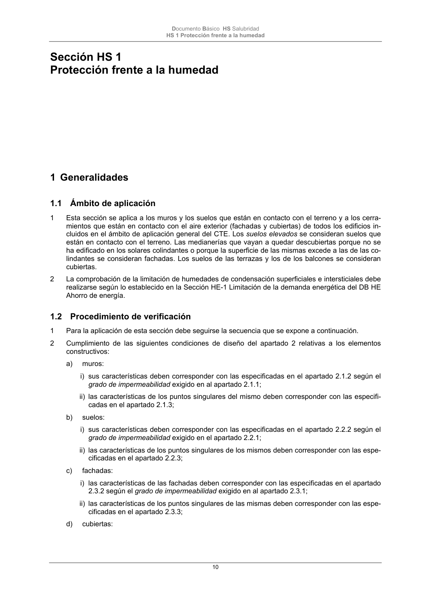

DB-HS · 1.2 Procedimiento de verificación · versión 2022-06-14 · capa oficial
Formatos: JSON compacto · Markdown · PDF fuente
Ámbito del documento · texto del ámbito · documento y tablas
ID técnico a0037 · PDF pág. 10-11 · jerarquía no validada por persona · contrastado con el literal de la página 10 (candidato tipográfico); no validado por persona · padre: raíz
1.2 Procedimiento de verificación 1 Para la aplicación de esta sección debe seguirse la secuencia que se expone a continuación. 2 Cumplimiento de las siguientes condiciones de diseño del apartado 2 relativas a los elementos constructivos: a) muros: i) sus características deben corresponder con las especificadas en el apartado 2.1.2 según el grado de impermeabilidad exigido en al apartado 2.1.1; ii) las características de los puntos singulares del mismo deben corresponder con las especifi- cadas en el apartado 2.1.3; b) suelos: i) sus características deben corresponder con las especificadas en el apartado 2.2.2 según el grado de impermeabilidad exigido en el apartado 2.2.1; ii) las características de los puntos singulares de los mismos deben corresponder con las espe- cificadas en el apartado 2.2.3; c) fachadas: i) las características de las fachadas deben corresponder con las especificadas en el apartado 2.3.2 según el grado de impermeabilidad exigido en al apartado 2.3.1; ii) las características de los puntos singulares de las mismas deben corresponder con las espe- cificadas en el apartado 2.3.3; d) cubiertas: Documento Básico HS Salubridad HS 1 Protección frente a la humedad 11 i) las características de las cubiertas deben corresponder con las especificadas en el apartado 2.4.2; ii) las características de los componentes de las mismas deben corresponder con las especifi- cadas en el apartado 2.4.3; iii) las características de los puntos singulares de las mismas deben corresponder con las espe- cificadas en el apartado 2.4.4. 3 Cumplimiento de las condiciones de dimensionado del apartado 3 relativas a los tubos de drenaje, a las canaletas de recogida del agua filtrada en los muros parcialmente estancos y a las bombas de achique. 4 Cumplimiento de las condiciones relativas a los productos de construcción del apartado 4. 5 Cumplimiento de las condiciones de construcción del apartado 5. 6 Cumplimiento de las condiciones de mantenimiento y conservación del apartado 6.

PDF fuente redistribuible: copia fiel enlazada en esta página (SHA256 verificado).